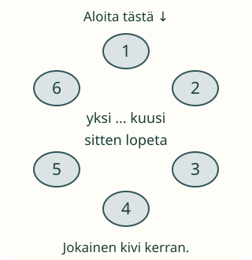

Laske retkitavarat

Loikka pakkaa kiviä retkelle. Miten kaikki tulevat lasketuiksi?
Tavoite: lasken jokaisen kerran ja käytän lukusanoja järjestyksessä.
Loikka pakkaa kiviä retkelle. Miten kaikki tulevat lasketuiksi?
Tavoite: lasken jokaisen kerran ja käytän lukusanoja järjestyksessä.
Laita kuusi tavaraa pöydälle. Valitse aloitus. Osoita kutakin kerran: yksi, kaksi, kolme, neljä, viisi, kuusi. Kun kaikki on laskettu, lopeta.

Jos palaat aloituskiveen ja sanot seitsemän, yksi kivi tuli kahdesti mukaan. Kiviä on kuusi. Muista alku ja lopeta kuuden jälkeen.
Laita samat kuusi tavaraa hajalleen. Laske vaikkapa ylhäältä alas. Jokainen saa yhden sanan. Tulos on kuusi. Voit käydä esineet eri järjestyksessä, mutta sanat ovat yhä yksi, kaksi, kolme…
Mieti hetki: mikä auttaa muistamaan jo lasketut?
Voit edetä itse tai käynnistää rauhallisen näytön.
Kuusi kiveä: yksi, kaksi, kolme, neljä, viisi, kuusi. Jokainen kerran.
Laske nämä kivet. Voit merkitä niitä kerran napauttamalla, jos se auttaa. Voit myös vastata suoraan.
Valitse koko määrä.
Valitse vastaus.
Palaa ringin kuvaan. Kuusi on jo laskettu. Mitä teet?
Valitse vastaus.
Valitse reitti: ensin ylärivi, sitten seuraava. Jätä laskettuun merkki. Sano tai ajattele yksi sana jokaista kohti.
Laske kahdeksan oikeaa tavaraa. Aloita toisesta esineestä ja laske uudestaan. Kun jokainen on mukana kerran, sama määrä löytyy.
Välttämättömät esitiedot ovat sekä M-NUM-STABLE-ORDER että M-NUM-1TO1. Tässä yhdistetään ne; määrävalinta yksin ei paljasta käytettyä laskutapaa. M-NUM-02 syventää viimeisen sanan kokonaismerkityksen. Numerovalinnat on kirjoitettu myös sanoina, jotta numeromerkin tuntemus ei ole erillinen portti.
Ilman laitetta: laskekaa samat tavarat rivissä ja ringissä. Pyydä näyttämään aloitus. Älä vaadi esineiden nimeämistä tai yhtä ainoaa vierailureittiä. Lopuksi: miten varmistit, ettei mikään tullut kahdesti?
Lopuksi: miten lasket hajallaan olevan joukon?